四参数生理监测终端 + 微信小程序
心率、血氧、体温、步数——测得准，更要传得稳：一块自制底板，一条双链路，两个从零手写的客户端。

整机实物：自制 PCB 底板 + OLED 中文界面 + 板载 ESP32-C3（真机拍摄）
Overview
这台设备
设备实时采集心率血氧（MAX30102）、体温（DS18B20）与步数（MPU6050），在 128×64 OLED 上渲染中文界面，并通过蜂鸣器与 LED 做阈值报警；数据经 ESP32-C3 走两条独立链路上报。本页所有数据均来自真机实测。
- 自制 PCB 底板承载主控与 5 个模块；固件约 29 KB / 32 KB 上限——还塞下了自建中文字库。
- 双链路上报：本地 AP+TCP 直连（2 秒/帧）与巴法云中转（6 秒/帧），两端客户端均可一键切换。
- 两套客户端独立手写：Android（MPAndroidChart 双轴曲线、SQLite 历史库、前台服务）与原生微信小程序（Canvas 2D 自绘双 Y 轴、按天分键存储与降采样）。
- 8 项任务书之外的扩展功能——包括零硬件改动的睡眠检测（MPU6050 体动 + 心率基线双判据）。
Architecture
系统架构
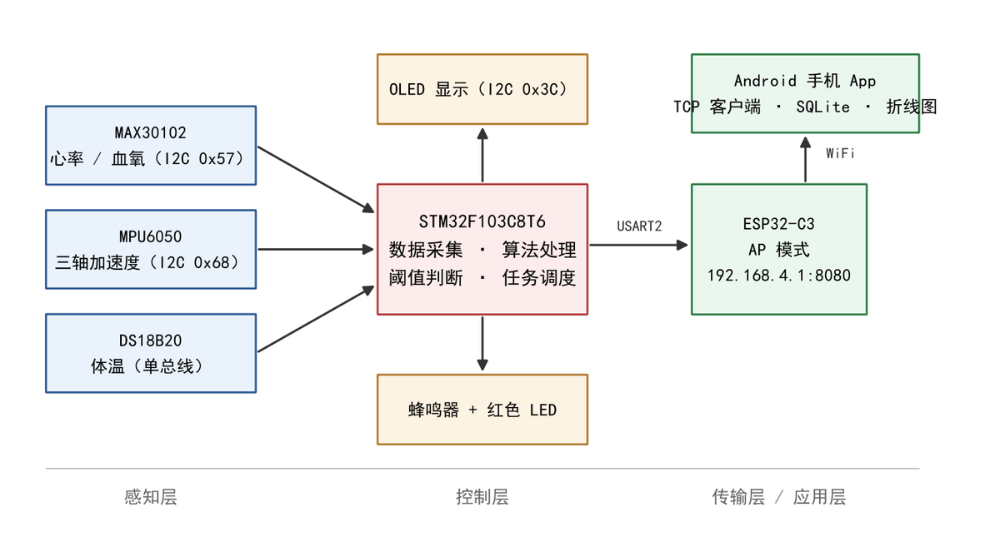
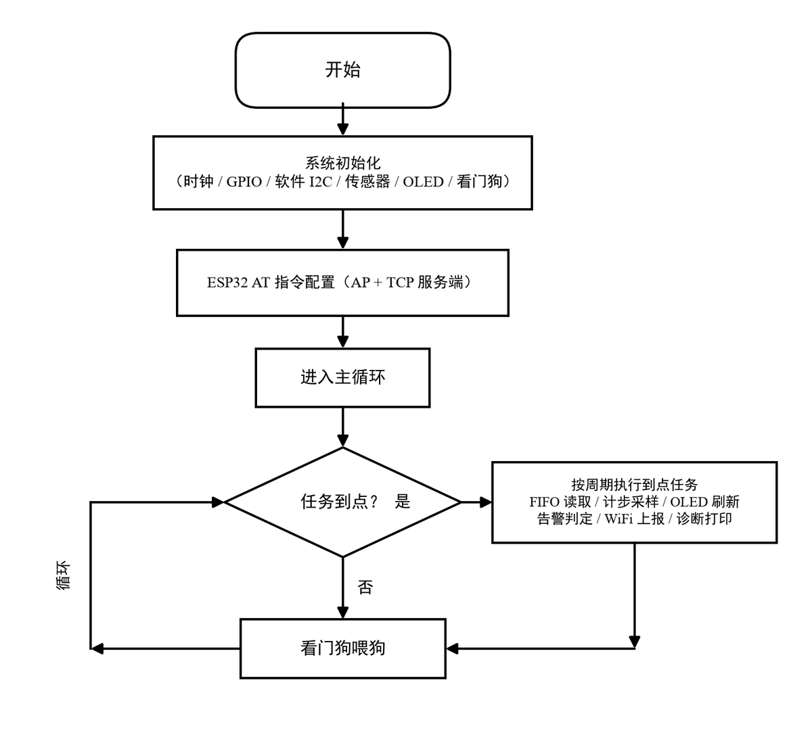
数据链路：STM32 采集全部传感器、运行 PPG 算法，输出带 CRC-8 校验的文本帧；ESP32-C3 既可作为 AP 内的 TCP 服务端（192.168.4.1:8266）直连手机，也可把数据发布到巴法云主题。客户端以同一套协议解析并渲染实时曲线；事件帧用「手机时间 −（开机秒数 − 事件秒数）」换算绝对时间，断线补发的数据也不会打乱历史时序。
$HR=76,SPO2=97,TEMP=25.3,STEP=4,SLEEP=0,SDUR=0,UP=3600*XXCRC ✓可交互演示：帧数值实时刷新，末尾校验字节由浏览器实时计算 CRC-8/SMBUS（与三端固件/App/小程序同一算法）。
Demo
实物与界面
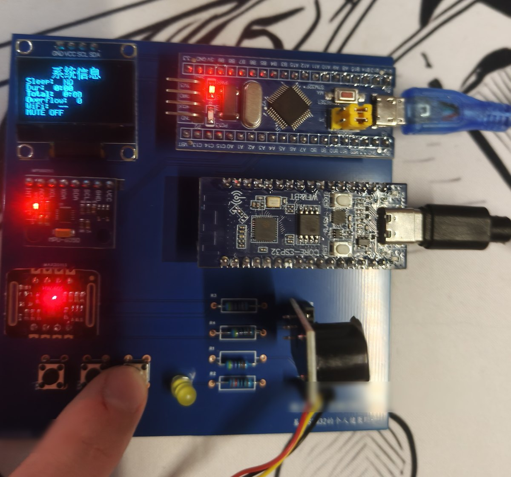
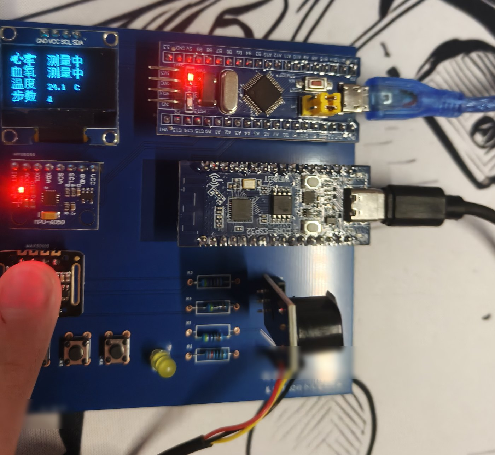
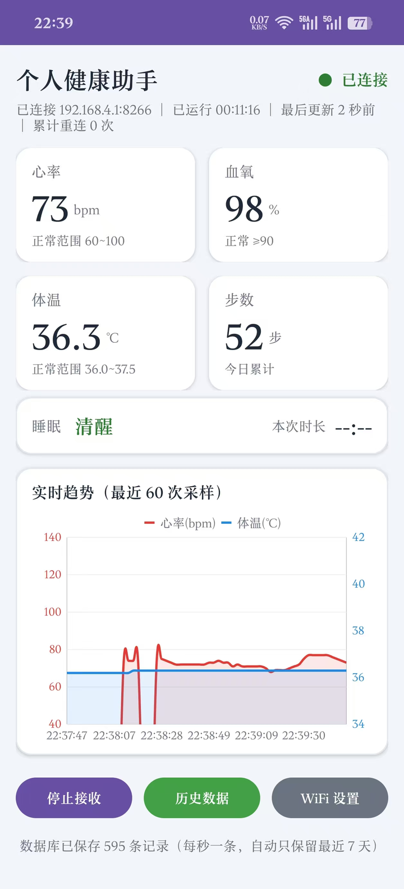
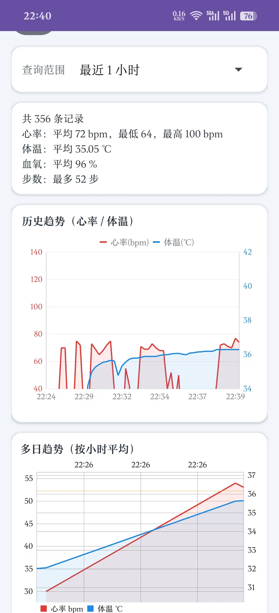
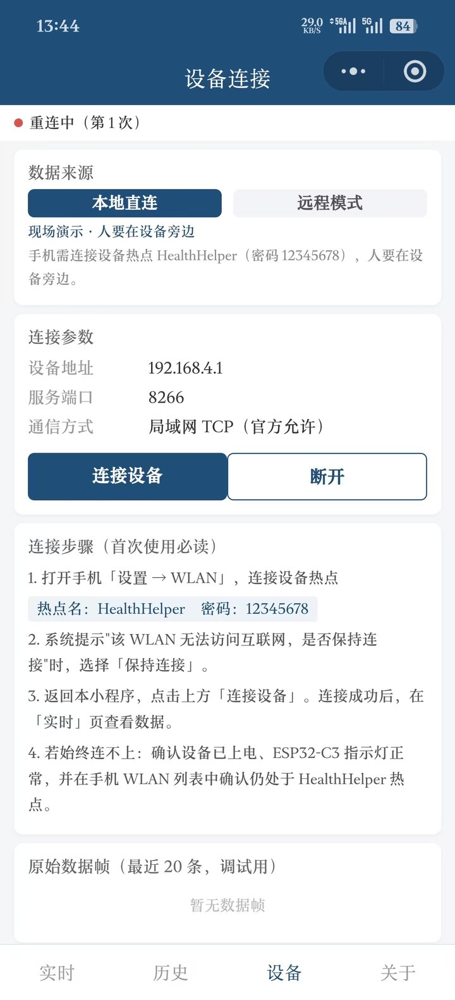
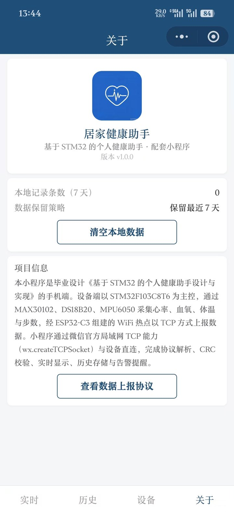

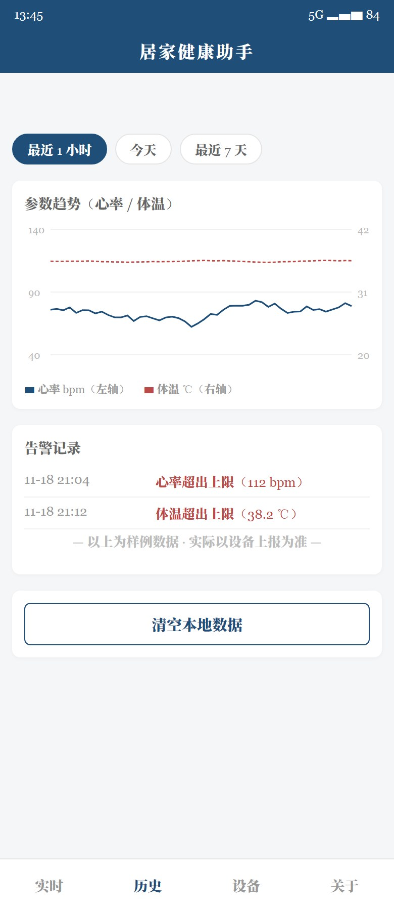
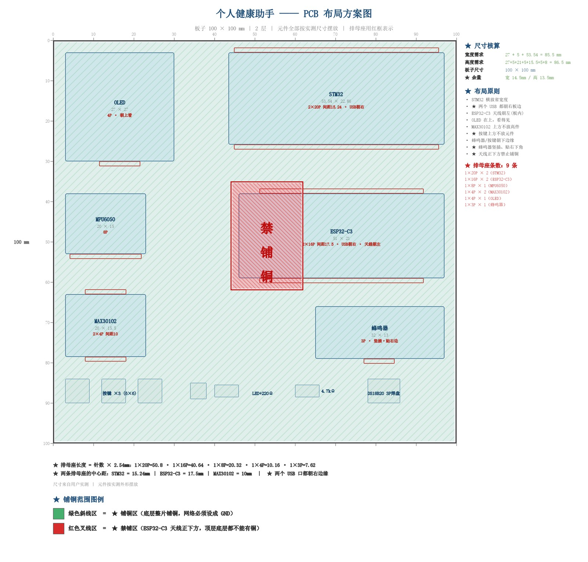
Implementation
怎么实现的
CRC-8 文本帧协议
固件、App、小程序共用同一协议：$HR=76,SPO2=97,TEMP=25.3,STEP=4,SLEEP=0,SDUR=0,UP=3600*XX。CRC-8/SMBUS（poly 0x07，标准校验向量 0xF4），配 9 条容错规则：键序任意、缺字段沿用上次值、半帧粘包缓存、CRC 不匹配整行丢弃。解析层由 Node 单测覆盖，37/37 全过。
PPG 信号链路
MAX30102 走软件模拟 I2C（约 25 kHz）。心率提取对比了三种方案（找峰 / 找谷 / 汉明窗平滑），经 4 轮迭代消除 ±18 bpm 波动与重搏波重复计数后定稿。
双链路传输
ESP32-C3 AT 固件：本地 AP + TCP 服务端实现 2 秒/帧直连；巴法云主题发布实现 6 秒/帧远程。事件帧（$EVT=1,T=1800*XX）携带开机秒数，客户端可还原绝对时间——断线补发不乱时序。
工程方法
24 个分步验证工程（每工程只验一个外设，故障定位锁定单变量）；自研串口「软件示波器」直接看 I2C ACK；一键串口 ISP 烧录工具（波特率自适应握手）开源为 stm32-serial-flash。
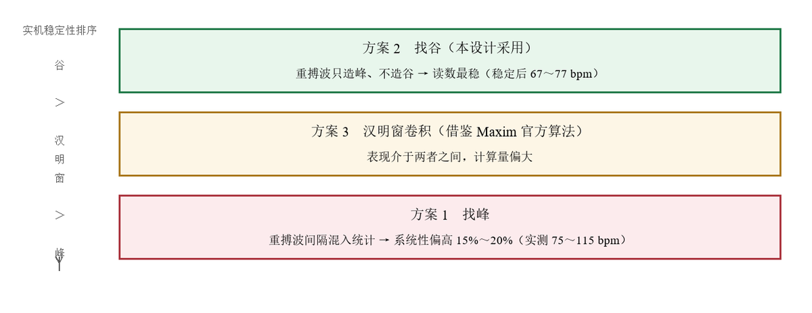
Results
数字
| 指标 | 实测 | 验收要求 | 结果 |
|---|---|---|---|
| 心率 MAE（20 组） | 0.95 bpm | ≤ ±10 bpm | PASS |
| 血氧 MAE（10 组） | 0.40 % | ≤ ±5 % | PASS |
| 体温最大偏差（11 组） | 0.5 ℃ | ≤ ±1 ℃ | PASS |
| 计步最大偏差（15 组） | 15.0 % | ≤ 15 % | PASS |
| 固件体积（含中文字库） | ≈29 KB / 32 KB | 不超 32 KB | PASS |
| 帧率 | 本地 2 秒/帧 · 云端 6 秒/帧 | — | PASS |
数据出处：传感器测试记录表（心率 20 组 / 血氧 10 组 / 体温 11 组 / 计步 15 组，2026.11）与三端联调交接文档。
Debug log